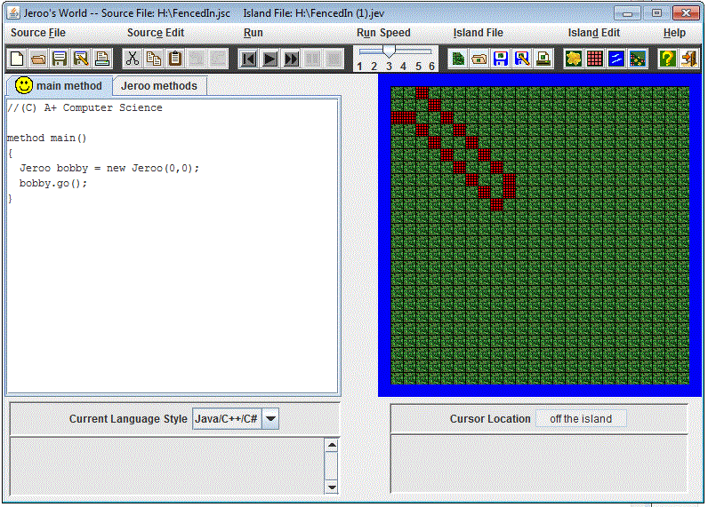

Unit 1 in Jeroo
Description
We used Jeroo to make a character called Jeroo move around! We used a program that makes a character for us. We learned the basics of Jeroo and the basics of coding!
Concepts Learned:
- I learned how to pick flowers and toss nets.
- I learned how to move around.
- I learned the basic commands.
- I learned how to create a new Jeroo.
- I learned how to call a method.
Unit 2 in Jeroo
Description
In Unit 2 of Jeroo some new stuff were introduced to us. We started having to use a bit of problem solving to finish the labs. Jeroo strated to get more hard to use!
Concepts Learned:
- I learned how to start the Jeroo in different places and give it flowers while also facing a certain direction.
- I learned how to plant flowers in different ways trying to make it into a certain shape.
- I learned how to create more then one Jeroo and thjat you can't have more then 4.
Unit 3 in Jeroo
Description
In Unit 3 in Jeroo we started to get much deeper in how to make things constantly happen. We still used the same things learmed in Units 1 and 2, but it was much more struggling to figure out.
Concepts Learned:
- I learned how to start using loops.
- I learned how to not let one Jeroo run into another.
- I learned how to make the Jeroo switch Directions to move back and forth.
Unit 4 in Jeroo
Description
In Unit 4 in Jeroo we had harder labs and added on much more concepts. I thought Unit 4 was cool cause we were doing cause and effect type stuff. This was wgere if one thing happened something else would happen to which I thought was pretty knarly.
Concepts Learned:
- I learned how to use x and y operaters.
- I learned how to do boolean variables.
- I learned how to do if then else statements.
- I learned how to do if else statements..
- I learned how to make a recursion in the recursive lab.